memcpy-based encode/decode performance. These are pure CPU — no Redis involved. Decoding (to_double, to_int) is ~2ns. Encoding allocates a std::string (~42ns).
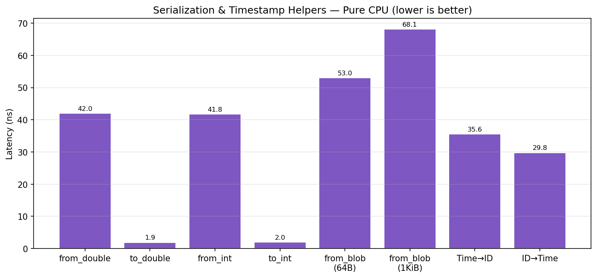
Latency for individual add/get operations over TCP loopback. Redis 7.0.15 is consistently ~2x faster than 8.x for single-threaded operations.
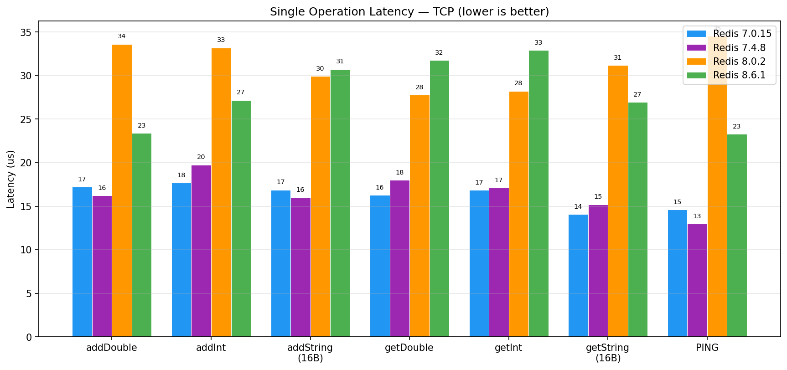
Same operations over Unix domain socket. UDS reduces latency by 5-8us vs TCP on 7.0.15.
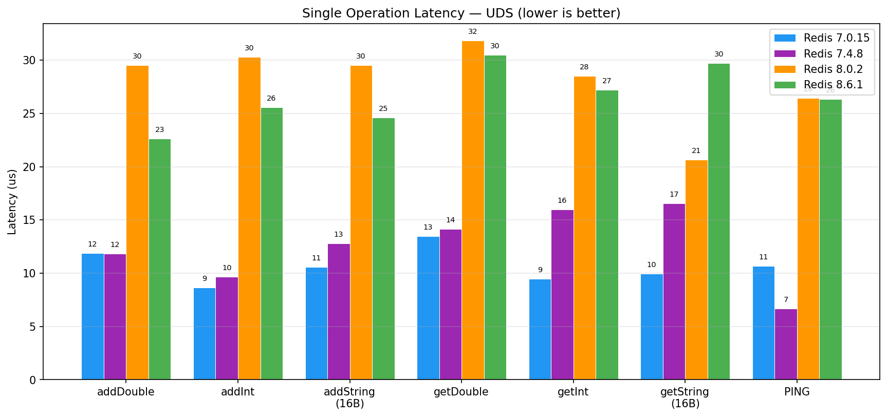
Direct transport comparison on the fastest Redis version. UDS wins by 1.3-1.9x on every operation.
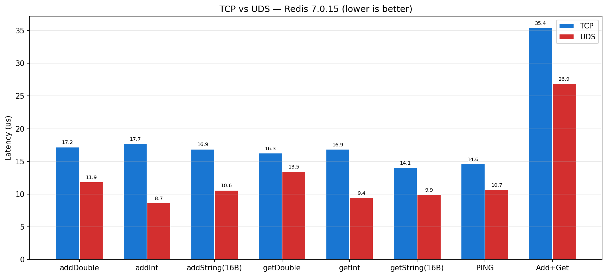
How latency scales with query size (XRANGE). All versions converge at large batch sizes — the transport round-trip becomes negligible vs Redis-side serialization.
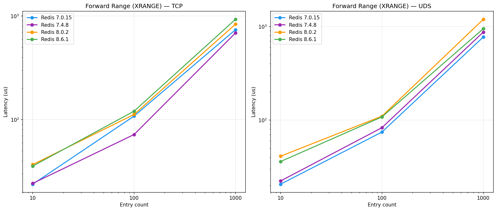
Individual XADD calls in a loop. UDS advantage compounds linearly with batch size.
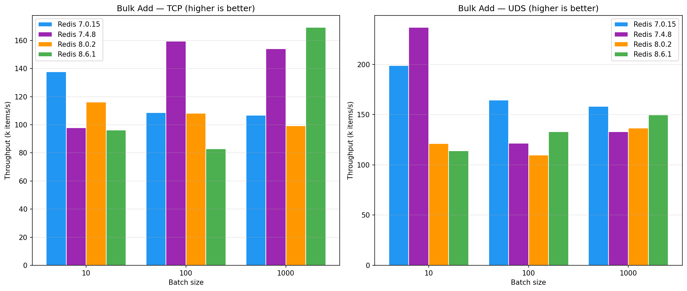
Write throughput vs payload size. All versions converge at 1 MiB (~1.2 GiB/s) — memory copy and TCP/UDS bandwidth become the limit.
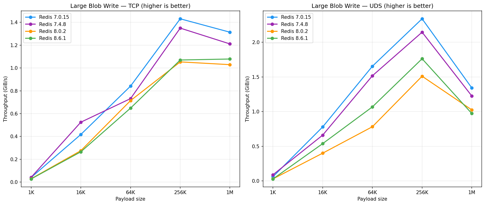
Aggregate throughput with N concurrent writer threads. Redis 7.0.15+UDS peaks at ~250k ops/s. Redis 8.x io-threads help at 8 threads but don't overcome the single-op latency penalty.
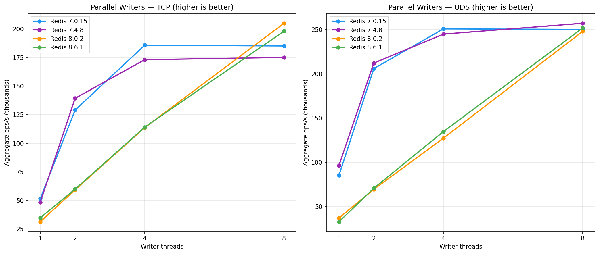
Half writers, half readers on the same stream. Simulates realistic workloads.
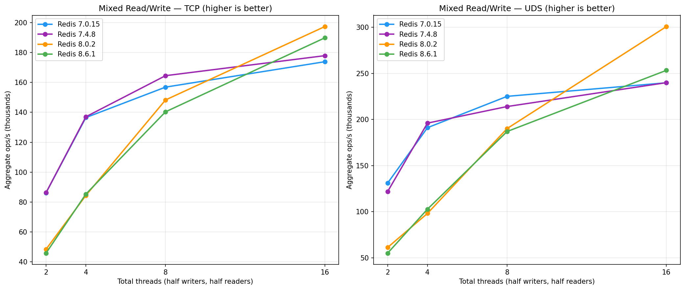
Range queries on a 100K-entry stream. Redis 8.x shows some improvement at small query sizes.
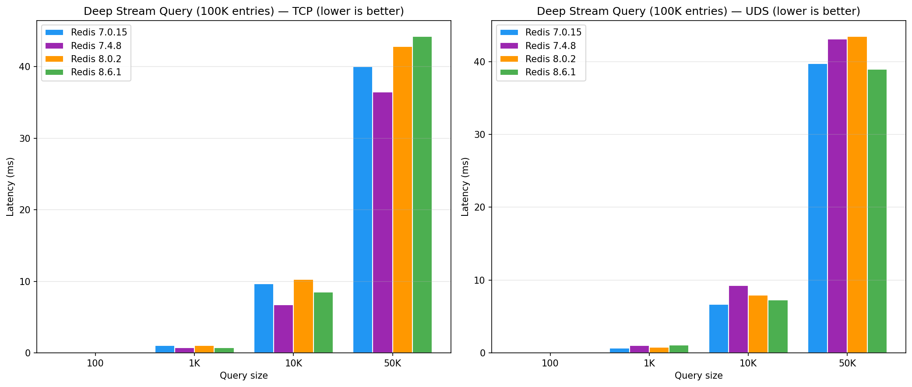
Write one entry to N distinct stream keys then delete. Tests key creation overhead.
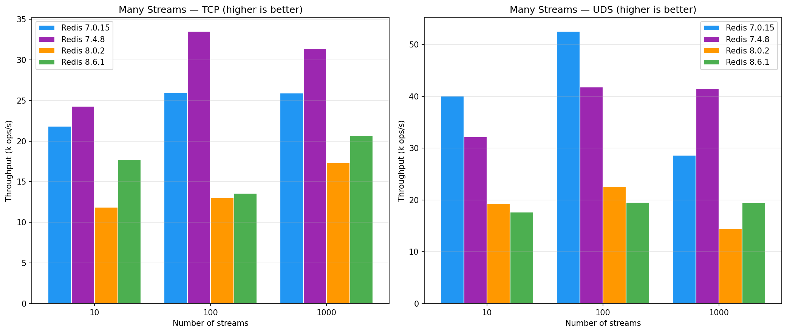
Generated from Google Benchmark JSON data. Raw data in doc/benchmarks/*.json.